Know what you need to comply with
A competent person selects the Act, the regulations and the sub-regulations that apply to your company. The system shows them in the official wording and works out what is needed to show compliance.
VDW Compliance Control System
Know exactly what the law requires of your company. Prove that you comply. Stay compliant, every day, at every branch.
Occupational Health and Safety Act 85 of 1993 and its regulations · South Africa
PDF · 12 pages · 3.7 MB
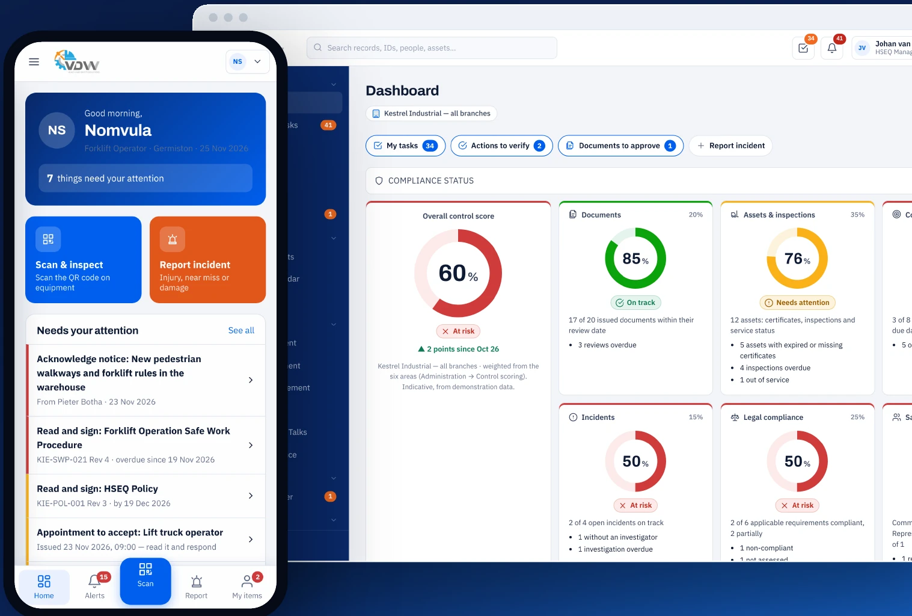
Why it matters
Most companies know they must comply with the OHS Act. The hard part is knowing exactly which regulations apply, what each one requires, and keeping the proof up to date while people, equipment and documents change every week.
| Without a system | With the VDW Compliance Control System |
|---|---|
| Requirements live in someone’s head, a file or a spreadsheet. | Every applicable requirement is in one register, next to the official wording of the law. |
| Certificates, appointments and training expire unnoticed. | Due dates become tasks, reminders and escalations, before anything lapses. |
| Findings from inspections, audits and incidents are written down, then forgotten. | Every finding becomes a corrective action with an owner, a due date, evidence and independent verification. |
| Signed paper registers go missing. | People read, acknowledge and sign on their phones; attendance registers print with the signatures. |
| Proof is gathered in a rush when an inspector or client auditor arrives. | Evidence is linked to the requirement as the work is done, and gaps are flagged on their own. |
| Management sees the real position only after something goes wrong. | A live control score per branch shows where you stand and what needs attention. |
A competent person selects the Act, the regulations and the sub-regulations that apply to your company. The system shows them in the official wording and works out what is needed to show compliance.
Inspections, reviews, renewals, drills and training are scheduled and tracked. The daily work in the system feeds back into the compliance status, live.
How it works
A professional decides what applies; the system turns that into work; the work produces the proof.
Your VDW consultant picks the Act and the regulations that apply to your company and ticks the sections that apply. No generic questionnaire: a professional makes the call.
For each requirement, the system proposes what shows compliance (documents, appointments, training, certificates, inspections) and what maintains it, and schedules it in the compliance calendar.
Day-to-day work happens in the system: inspections, risk assessments, incidents, training, contractors and corrective actions, on a computer or on a phone at the workplace.
Records feed back into the requirements register as they happen. Each requirement shows its live evidence, gaps are flagged automatically, and the control score shows the position per branch.
Selects the applicable legislation, checks the legal wording, sets up your company and reviews progress at each visit.
Run the system day to day: approve documents, plan inspections and audits, investigate incidents, close corrective actions.
Use their phones to inspect equipment, report incidents, read and sign documents, accept appointments and sign for PPE and talks.
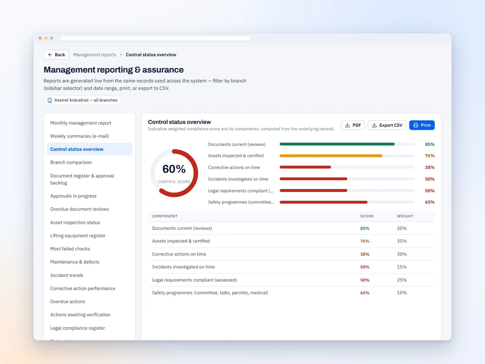
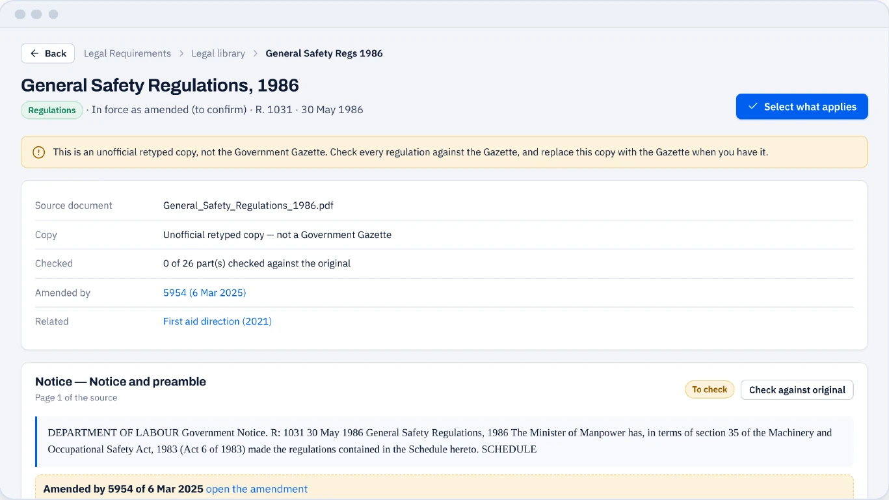
Legal requirements
The legal library holds the OHS Act and its regulations as official wording, loaded from the official documents. Your consultant selects what applies; the system adds its interpretation, clearly labelled, next to the law and never in place of it.
Requirements register
Records are linked to the legal requirement they support. Each requirement then shows its evidence live, and when evidence goes out of date the register says so before anyone has to look. A requirement with a gap counts as partially compliant until it’s fixed, so the figure reflects reality.
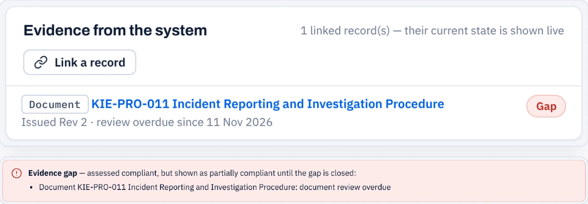
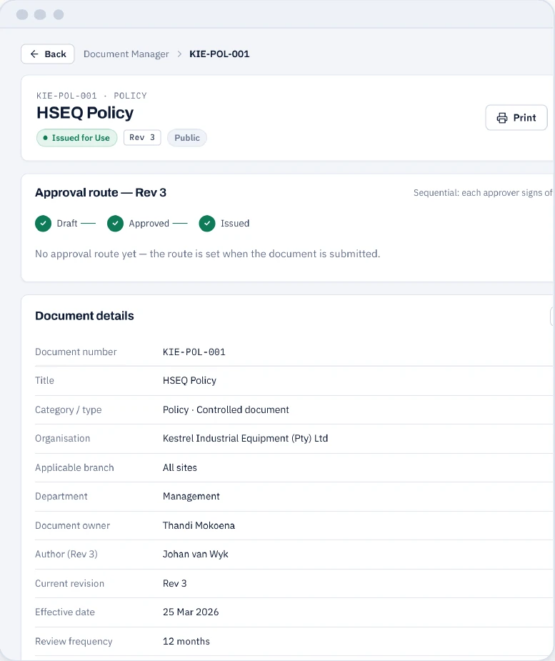
Document control
Upload, approve in order, issue, read and sign, review. Only the issued revision is used: downloads are stamped and printed copies are marked uncontrolled.
Risk management
Each hazard is assessed in one form, step by step: hazard, risk, consequence, rating before controls, the hierarchy of controls, and rating after controls. Only a complete assessment can be signed off, and every new control is followed through to evidence that it is in place.
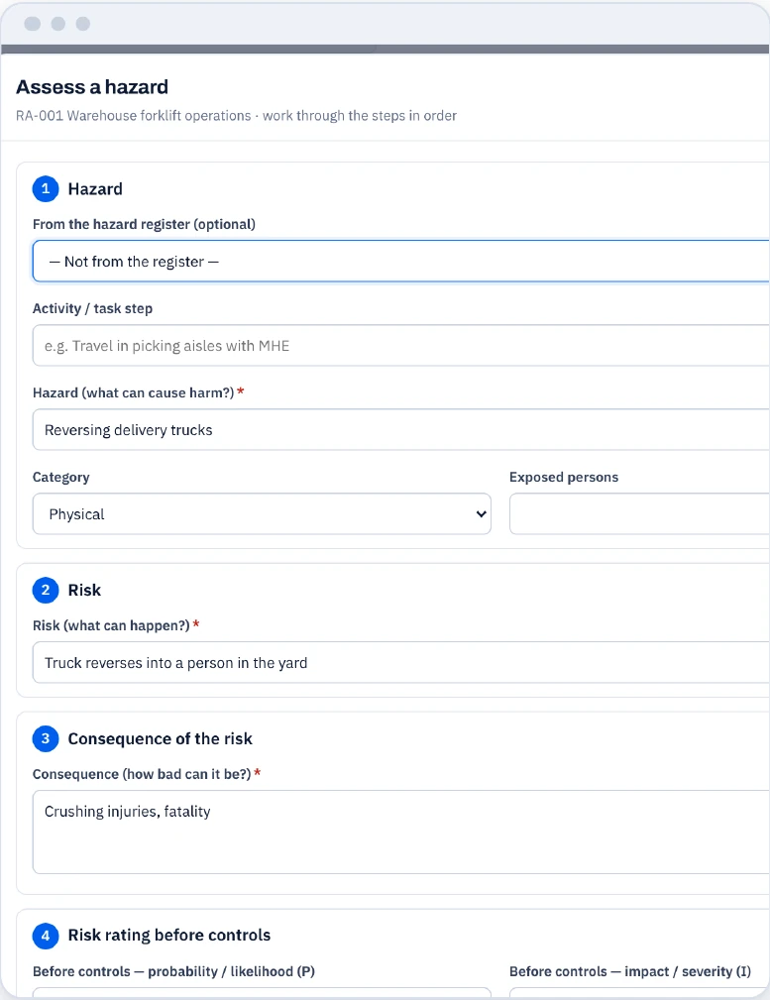
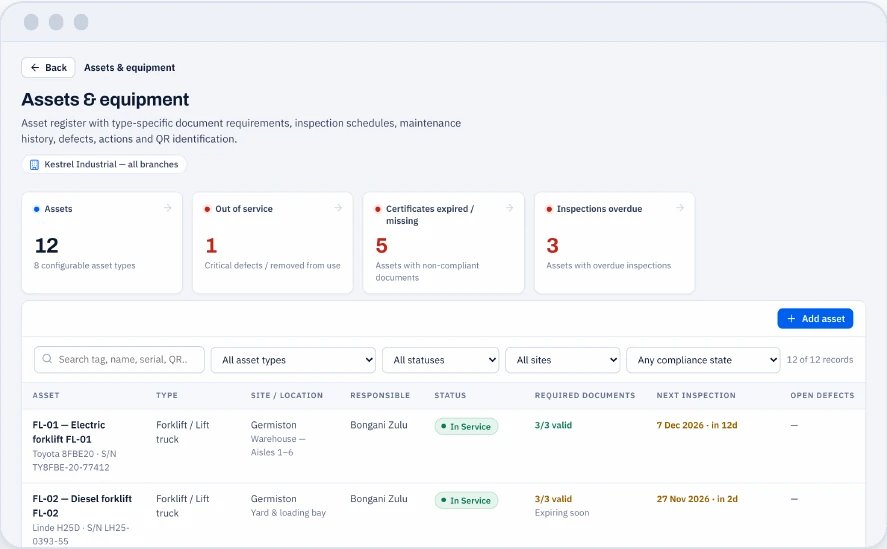
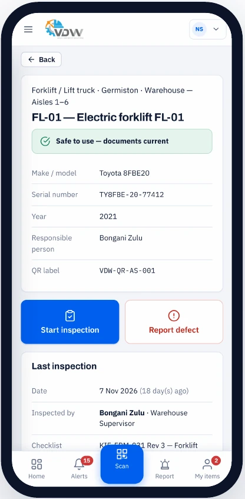
Equipment and corrective actions
Every piece of equipment has its required certificates, an inspection schedule and a QR label. A failed check never disappears: it becomes a defect and a corrective action that someone else verifies.
Incidents and audits
Incidents are reported from a phone with photos, investigated with signed witness statements and a guided 5 Whys root cause, and closed only when the corrective actions are done. Audits use ready-made or your own checklists, with scoring, findings and a PDF report.
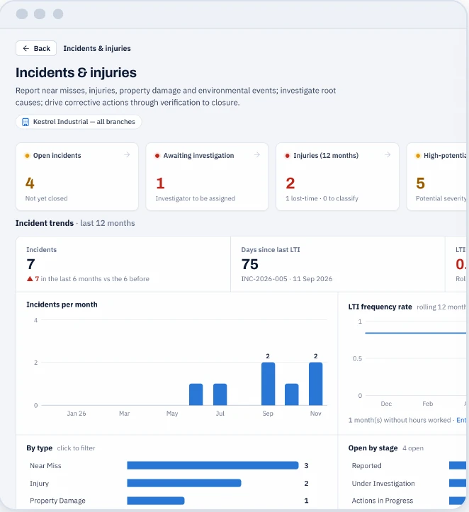
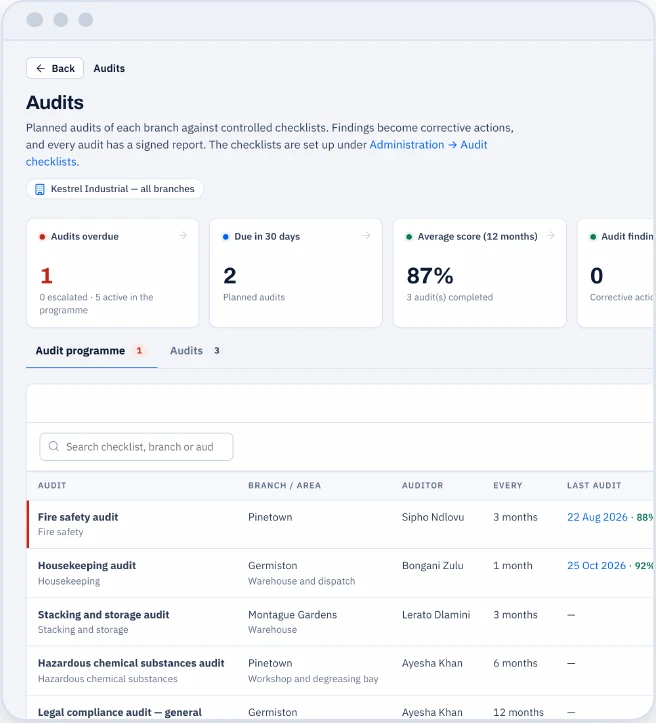
People and contractors
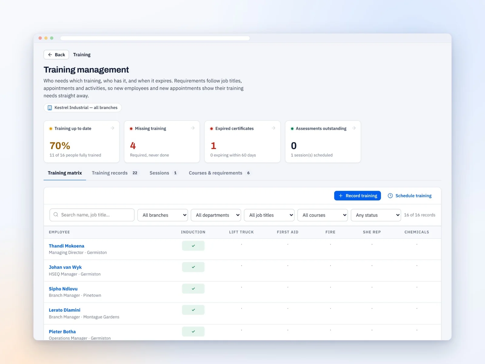
Issued digitally; the employee reads, signs and accepts on their phone, or declines with a reason.
A training matrix by job, appointment or activity, with sessions, certificates and expiry reminders.
A library of talks; attendees sign on screen, and the register prints on demand.
Requirements per job, issues signed by the employee, and replacement dates.
Who needs which examination, fitness outcomes and restrictions. No clinical results are kept.
Plans and assembly points per branch, marshals and first aiders, drills held and planned.
Representatives, meetings, minutes and representatives’ inspections.
Hot work, work at height, confined spaces, isolation and excavation: issued, extended and closed out.
A register with safety data sheets, storage, PPE and the related risk assessment.
Choose the documents each contractor must provide, then share a private upload link. The contractor uploads everything (no account needed) and lists the people who will work on site.
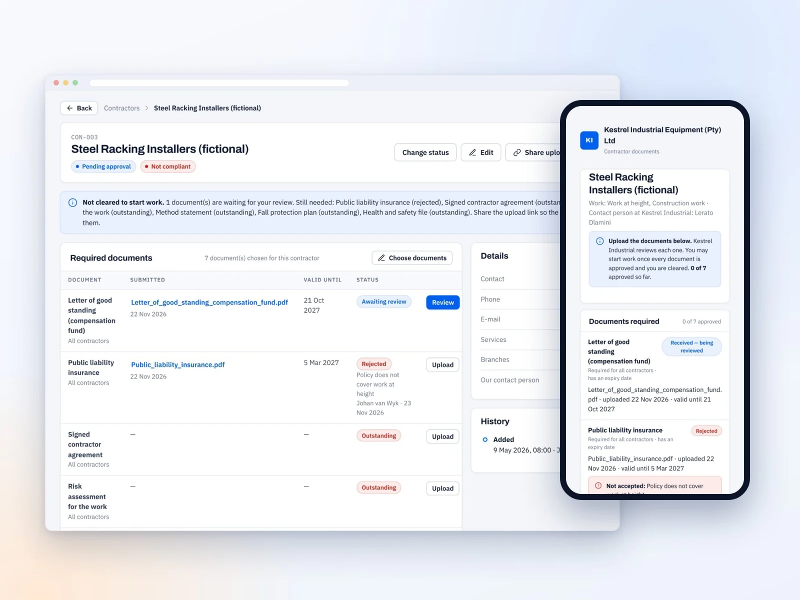
On the floor and in the office
Employees use their phones; managers and consultants see the whole picture. Everyone sees only what their role needs, for their own branch.
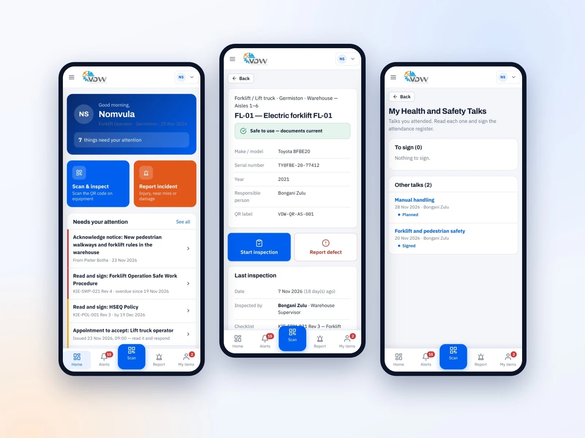
Who uses it
| Managing Director | The control score, legal compliance and key risks for the company and each branch; approves documents and changes; receives the monthly management report. |
|---|---|
| HSEQ Manager | Runs the system: legal register and compliance calendar, documents, risk, audits, incidents, corrective actions, training, permits and contractors. |
| Safety consultant (VDW) | Selects the applicable legislation, checks the legal wording, sets up the company, does audits and advises. |
| Branch Manager | The branch’s inspections, defects, incidents, corrective actions, contractors and emergency readiness. |
| Supervisor | Inspections, Health & Safety Talks, PPE issues and the team’s tasks, from a computer or a phone. |
| Employee | The phone app: scan and inspect, report incidents, read and sign documents, accept appointments and sign for PPE and talks. |
Getting started
We do the set-up with you as part of Compliance System Onboarding.
Company, branches and users, imported from Excel.
Your VDW consultant selects the regulations that apply.
Documents, equipment, appointments and training records.
Employees on their phones; the register fills itself.
The full VDW Compliance Control System overview as a PDF, to read later or share with your team.
Book a walk-through of the VDW Compliance Control System with your own branches, legislation and documents.
The VDW Compliance Control System helps a company identify, manage and evidence its compliance with the Occupational Health and Safety Act and its regulations. It does not by itself guarantee legal compliance: the employer remains responsible for its statutory duties, and applicability and compliance are decided by a competent person. Screens show fictional demonstration data.